This contains all the documentation for the NGS Genotyping Pipeline, NGSG Retype, and NGSG Reference, as well as how to get started using the NGSG Explorer web service v2.04.000.
To install the pipeline and additional tools (Retype and Reference), follow these steps:
New users should read:
The NGS Genotyping pipeline is composed of several stages:
There are three additional stand-alone tools that have been integrated with v2.04.000 of the pipeline:
This section provides detailed information about technical aspects of the pipeline where various choices will impact the outcomes.
This project was developed by the staff of the ANU Bioinformatics Consultancy (ABC) and the Genotyping team of the Biomolecular Resource Facility (BRF), at The John Curtin School of Medical Research, The Australian National University.
This project is licensed under the MIT License. See the LICENSE file for more details.
Here is an alphabetical list of terms used in the NGS Genotyping Pipeline. It is by no means exhaustive, but aims to provide a useful reference for new users.
A-D
E-H
I-L
M-P
Q-T
U-Z
This glossary was built with the assistance of Microsoft Copilot. Please report any inaccuracies or suggestions for improvement.
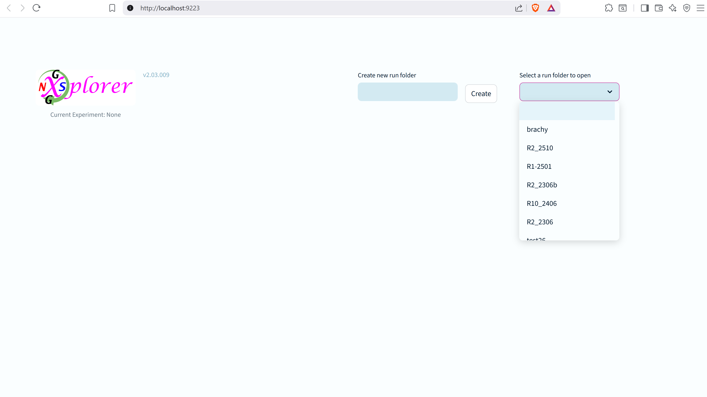
The left hand side of the start screen displays the Explorer logo, along with the version number, and the currently loaded experiment.
The right hand side of the start screen contains a field for the name of a new experiment to create, along with its button. Next to this is a drop-down menu of all existing experiments that you can load
When you make a new name for an experiment, it will be added to the list of available experiments. It will also create a new directory for the experiment files that is prepended with "run_".
The first stage of the NGS genotyping pipeline involves loading the necessary experiment files into the system. It is the first view a user gets when they create a new experiment.

This is what a new experiment looks like when first created. Let's explain the different components.
At the top left is the logo, version number, and currently loaded experiment name.

There are also buttons for returing to the home/start screen, and for saving the current experiment.
Saving the experiment will preserve all changes made to the experiment and allow you to reopen it at a later time. If you close the browser window without saving, you will likely lose your changes.
At the top right is a pipeline widget for navigating between different stages of the pipeline. The current stage is indicated by the right-most purple number.

Below, and to the left are page tabs for different sections of the load stage.

The Load stage has three tabs: Load Samples, Load Consumables, Load Amplicons
To the right, and below the tabs, are the controls and display areas for a pair of information panels.

You can read more about the various information panels, but for now you should know that these viewers default to panels considered most appropriate for the selected stage and tab.
Appropriate panels can be used to select files and plates that have been loaded, and remove them from the experiment.
It is also possible to adjust the height of the viewer, or turn it off completely with the checkbox on the far right of the screen.
Each stage and tab has its own specific content and controls. The Load stage has three tabs, and each tab will display different file upload options

For example, here is the file upload interface to Rodentity Ear Punch Plates, specific to the Load Samples tab.
You can find out how each of these works in the appropriate stage documentation.

Don't forget to save your progress regularly! Saving will preserve all changes made to the experiment and allow you to reopen it at a later time.
If you close the browser window without saving, you will likely lose your changes. That includes any files that have been uploaded or generated using the pipeline.
The pipeline is designed to be rigorous and reliable, so if it detects files in the experiment folder with an expected name, that aren't recorded in the experiment records, it will delete them.
At the bottom of every page is another information panel displaying the activity log.

This is a crucial tool for tracking all actions taken within the experiment. It is possible to change the view from the log panel to another information panel type, and you can have a second panel visible too. By default only the log is shown here to provide sufficient horizontal screen space.
The columns in the log display are (from left to right): Time, Level, Message, Function name, Func line.
Message levels are used to indicate the severity of an issue.
To aid users in spotting important issues, warnings are displayed in yellow, errors are displayed in red, and critical messages are in purple.
You cannot remove or clear log entries.
The first stage of the NGS genotyping pipeline involves loading the necessary experiment files into the system.
If you are not familiar with the interface, please refer to the new experiment documentation first.
The Load stage has three tabs: Load Samples, Load Consumables, and Load Amplicons
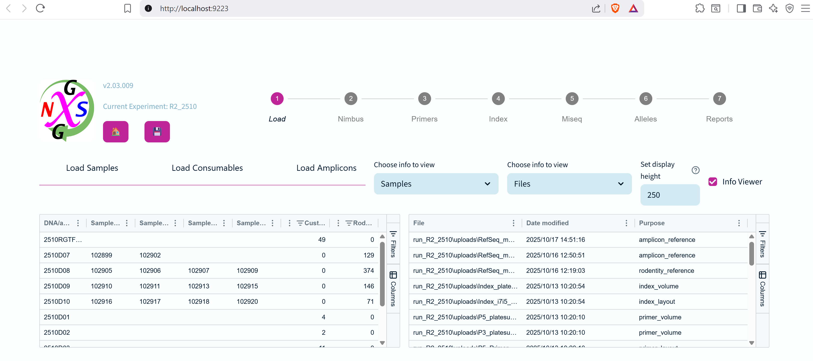
Here we can see an example of an existing experiment with samples loaded. The default viewer panels are Samples and Files.
The Load Samples tab has three upload sections for different types of samples: Rodentity Ear-Punch Plates, Custom 96-Well Plates, and Custom 384-Well Plates (such as "DNA" plates from previous experiments).
Rodentity Ear-Punch Plates
The main input widget for working with Rodentity ear-punch plates (EPP) is shown above. The user should have first downloaded the appropriate earch punch plate JSON file from Rodentity, and can then upload it for NGS Explorer here. The user can upload four JSON files at a time, representing four different ear-punch plates.
Uploading plates will cause the four slots below that to be filled with the corresponding plate ID.
Once sufficient plates are loaded, the user can assign a 384-DNA plate ID for these EPPs to be combined into using the Hamilton Nimbus robot. This is required for the subsequent stages of the pipeline.
Custom 96-Well Plates
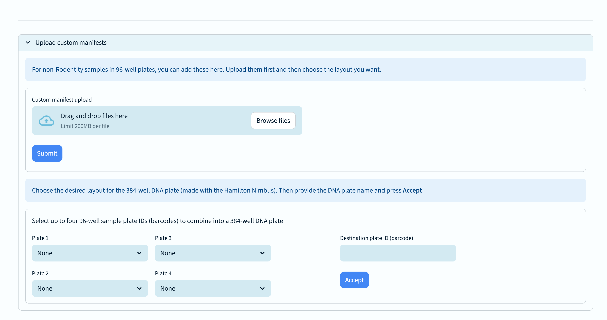
The main input widget for working with custom 96-well plates is shown above. The user can upload a CSV file containing the sample information for each well.
Any number of custom 96-well plate manifests can be loaded at once, each of which may detail any number of 96-well sample plates.
Under the upload button is a set of four drop-down selectors that let the user specify up to four plates to combine into a single 384-well "DNA" plate.
To the right is a text box for typing in a unique plate ID for the combined "DNA" plate, to be created using the Hamilton Nimbus robot.
Custom 384-Well Plates
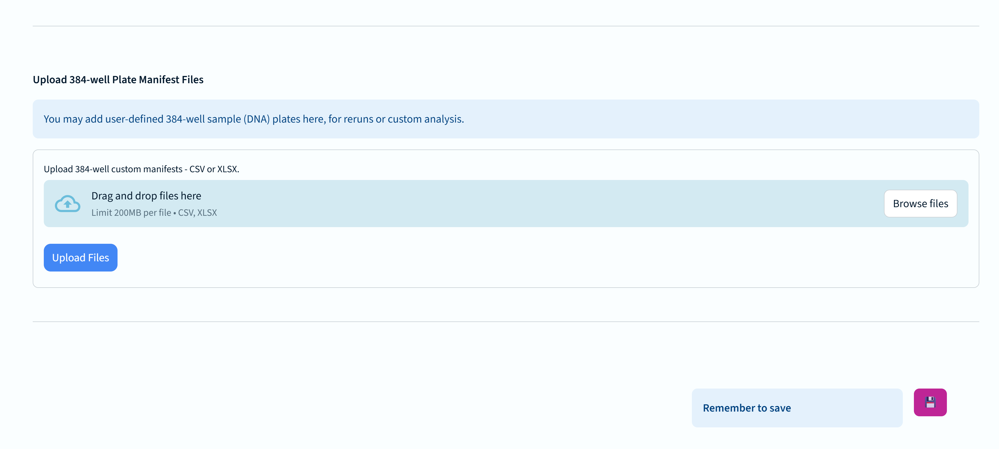
The main input widget for working with custom 384-well plates is shown above. Since these are already in the 384-well format, they do not need to be combined using the Hamilton Nimbus robot.
At the bottom right you will see a text button encouraging you to save your progress. If you close the browser window without saving, you will lose your progress.
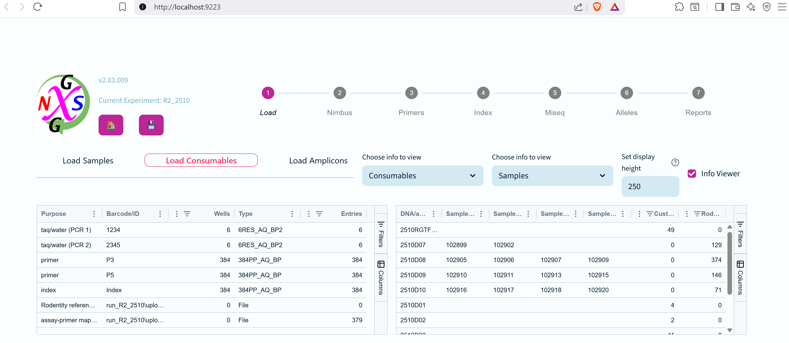
Here we can see an example of an existing experiment with consumables loaded. The default viewer panels are Consumables and Files.
There are four widgets for uploading/setting consumable information (from top to bottom): Reference/Assay files, Primer files, Index files, Custom volume transfers
Reference/Assay Files - see the File Formats documentation page for details on the required formats.
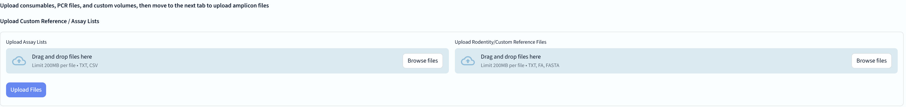
Primer Files - layout and volume files are needed for each primer plate. See the File Formats documentation page for details.
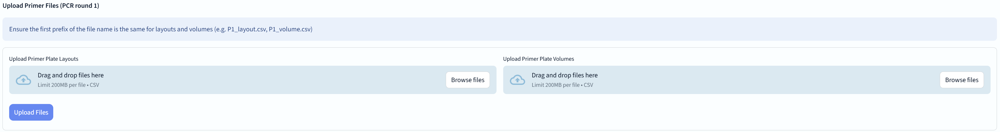
Index Files - layout and volume files are needed. These should be standard file used in every run, but see the File Formats documentation page for details.
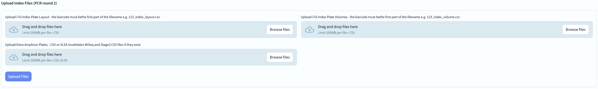
Custom Volume Transfers - do not adjust these unless specifically instructed. Changes are noted in the log.
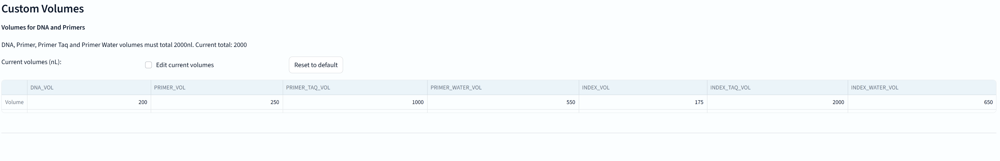
And don't forget to save your pipeline progress!
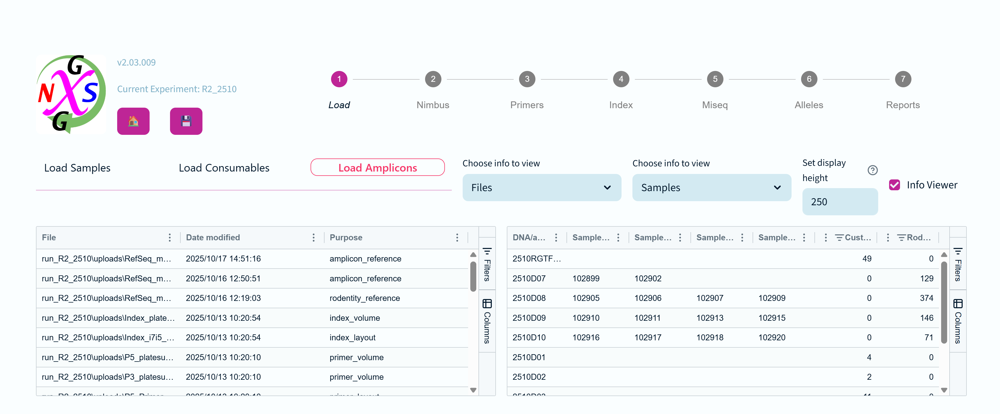
Here we can see an example of an existing experiment with amplicons loaded. The default viewer panels are Samples (including Amplicons) and Files.
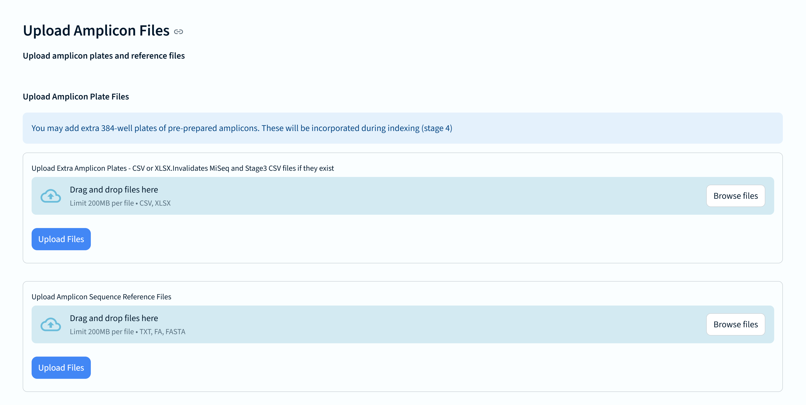
Any number of 384-well amplicon manifest files can be uploaded at once. Each amplicon reference file uploaded can be selected separately later to customise amplicon matching (in the Allele stage).
The second stage of the NGS genotyping pipeline involves using the Hamilton Nimbus robot to perform plate aggregation from 96-well to 384-well format.
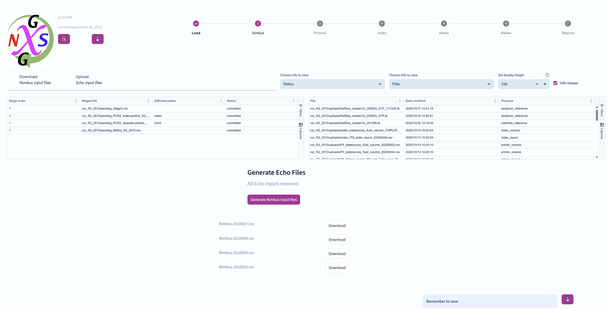
After loading the necessary files in the Load stage, you can download the Hamilton Nimbus robot input files from the Nimbus stage page.
These files contain all the information needed for the robot to perform the plate aggregation step.
You will need to generate the appropriate Nimbus inputs files by pressing the purple button labeled "Generate Nimbus input files". If files already exist then you will be asked whether you wish to overwrite them or not.
If you haven't loaded the necessary files in the Load stage, you will see a message indicating this:
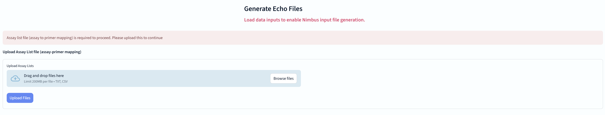
You are prompted to load the necessary files before proceeding, and a widget for uploading the assay-primer map file is made available if not yet loaded.
While the assay-map is not strictly required for the Nimbus robot, this information is needed to correctly generate the 384-well "DNA" plate records that are used as inputs for the next stage of the pipeline.
After you have stepped away to run the Hamilton Nimbus robot, you can upload the resulting Echo_384_COC_ files back into the system.
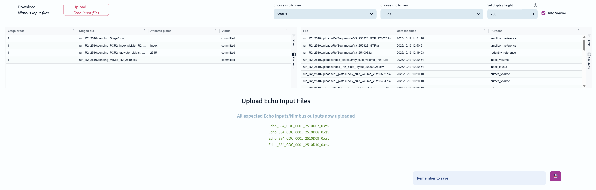
These files contain the information about how the samples have been aggregated into 384-well format, and are necessary for the subsequent stages of the pipeline. The pipeline combines them with the information it already has to generate an internal representation of the 384-well "DNA" sample plates that now exist physically.
For each Nimbus upload file created, the pipeline will expect to see a corresponding Echo_384_COC_file uploaded, and will prompt you for each of them, though you can proceed to the next stage of the pipeline as long as one Echo_384_COC file has been uploaded.
The third stage of the NGS genotyping pipeline involves performing primer PCR to amplify the target regions.
To achieve this, 384-well "Echo" plates are used to organize the samples for the PCR reaction.
Samples, taq polymerase, and water, and PCR primers, are added to the wells of the Echo plates.
For every combination of sample and assay, there will be at least one corresponding PCR well - usually several as different primer pairs will be used for each possible allele.

The components tab of the primer stage contains a table listing all the components used in the PCR reaction, including samples, taq polymerase, water, and PCR primers.
Users can see the quantities and details of each component, and enable/disable them using checkboxes.
This affects the summary table below the checkboxes, and the spreadsheet view of required and available primers.

Below the component information are widgets for adding PCR (Echo) plate barcodes, and Taq/water plate barcodes to the experiment.
Below that, there are upload widgets for primer layout and volume files.
Lastly, there is a widget for adjusting liquid transfer volumes with the Echo. Do not adjust these values unless instructed!
And don't forget to save your progress!
The Generate picklists tab has much of the same view as the Components tab, but here users can down-select from available plate options in order to generate Echo "picklists" for the primer PCR reactions.

After confirming that the selected components are correct and enabled with tickboxes, users can generate the picklists for the PCR reactions.
Any there are missing primers, they will be indicated in the summary table.
Ticking the "Force picklist generation" checkbox will override any warnings and generate the picklists regardless.
If any of the files to be generated already exist, the user will be prompted to confirm overwriting them.
The fourth stage of the NGS genotyping pipeline involves performing a second round of PCR to add unique index barcodes to the DNA fragments.
As with the Primer stage, there are two tabs for PCR Components and Generating Picklists.


You can see all of the component plates available for indexing here.

You can add plates specific to the index PCR stage here, namely dedicated taq/water plates for PCR2, index layout and volume, or extra amplicon plates.
There is no need to add additional PCR plates here, it's simply that the widget offers both the PCR and Taq/water barcode types.

Lastly, you can set custom transfer volumes for the index (PCR2) reaction. Do not do this unless specifically instructed!

Just like the Primer stage, this tab allows you to generate picklists for the index PCR reactions.
There are checkboxes to select the various available components for this pipeline stage.
There is no "force" option for generating files at this stage as the index barcodes are all required to be present at full volumes.
If the Echo PCR2 picklists already exist, you can choose to overwrite them or keep the existing ones.
...and don't forget to save your progress!
The fifth stage of the NGS genotyping pipeline involves sequencing the samples on the Miseq platform.

Miseq samplesheet files are generated at the same time that the index PCR picklists are created, so there is no need to generate them separately. Just download the file to USB when ready.
While the button exists here, you don't actually need to save the experiment at this stage.
The sixth stage of the NGS genotyping pipeline involves calling and counting alleles from the sequencing data.

There are two tabs at the Alleles stage - "Allele Calling for Rodentity Mice" and "Amplicon Calling for custom amplicons"
The upper info viewer panels default to Files and Plates as the most relevant items to track, but it's unlikely to be very useful in practice here.
This is the main NGS Genotyping pipeline tab for calling (identifying and counting) sequences for each sample/assay well.

The first widget displays the first and last (alphanumerically ordered) FASTQ file that have been manually copied to the "raw" subfolder within the experiment/run folder.
There is also a button here which will launch a count all the available raw sequences in the FASTQ files, which is a useful indicator of overall sequencing success.
It may take a few minutes to count all the sequences seen in a large genotyping run with thousands of files. Here is an example of the counts progressing:

You can see in this example that there are also messages announcing that the "targets.fa" and "primers.csv" files have been created. These are required by the allele calling process.

Next is the panel of options for the allele calling process. Before we discuss each option, here's a quick explanation about what happens when the "Run allele calling" button is pressed
With that in mind, let's go over these options:
The values for these parameters reset to the defaults after every calling run.
If you are still unclear about the meaning of any of these settings you can read the technical details page for allele calling/matching, but it's probably better to trust the defaults
When you are ready, click the button labelled "Allele calling"
You will soon see a progress bar widget that displays both the assignment of tasks to available computational processes, and another bar showing the actual task completion.

Depending on your settings it can take a few minutes to exact match a full set of mouse genotypes, and 10-15 minutes if also inexact matching.
Amplicon calling is slightly different from regular genotyping in that it always uses inexact matching to let clients explore the variety of sequences that may be present across an amplicon locus.
The interface is also designed around an expectation that there could be amplicon plates present from different clients simultaneously, each requiring a different reference to match against.

The first widget here is for uploading an extra amplicon reference files that might be needed for matching.

Next users can chose the combination of amplicon plates and references that are to be matched.
Amplicon matching options are essentially the same as for the genotyping workflow, with the only real change being that inexact matching is always performed for alleles.
Please refer to the Allele calling tab detailed above for descriptions of the calling options.

Once you have set an parameters required, click on "Run amplicon calling" to launch the processing of amplicon sequences.
The progress bars are the same as for the genotyping workflow:

Those with sharp eyes will notice some differences in the command line that is displayed compared to the genotyping command line
Each amplicon plate may take approximately one minute to process
The seventh stage of the NGS genotyping pipeline displays reduced column summary tables of results from the Allele stage.
For the Amplicon pipeline, it also allows multiple sequence alignments to be viewed, filtered for relevance, and then saved to a PDF document.

There are two tabs: 1) "Sequencing Results" for Rodentity, Custom and "Other" (amplicons that might be from Rodentity, or otherwise use the standard pipeline), and 2) "Amplicon Results" for Amplicons plates that were run through the Amplicon workflow.
The info viewer is set to show Files and Samples, but likely users will want to turn it off to focus on the result tables.
This tab displays the sequencing results for Rodentity, Custom, and "Other" samples.

Each table says "Unreported" in the header, but that's because this pipeline simply have that need. Let's look at the columns in the table.
Tables can be ordered by any column (just click on them), and can be ascending or decending.
It is important to remember that this table shows many less columns of information than are actually available to the user.

By right-clicking on the column headers you can customise the table to display different column choices. Here is a list of the columns that aren't displayed by default:
A reminder that the table entries can be copied in a nice format and exported if required:

This tab displays the amplicon results for samples that were run through the Amplicon workflow.
It has its own tab because it supports additional features specific to the Amplicon workflow. Notably the ability to perform multiple sequence alignments of the observed sequences. These can filtered out using the adjustable proportion filter (this is the only column that supports changing the values in each row).

Clicking on a row to select it will open an additional table underneath that show the variants (if any) that pass the filtProportion cutoff.
These are sent to multiple sequence alignment and displayed (in non-monospace font due to graphics restrictions). These can be further down-selected using the checkboxes at left, and a description added in the available text box.
Then clicking "Make report entry" will add them to a PDF report file (named amplicon_alignments.pdf) containing aligned sequences for each chosen sample.
Once a sample has been added to the report, it is removed from the "Unreported amplicon" table and placed in a new table at bottom named "Reported amplicons".
Currently (v2.04.000) it isn't possible to remove individual amplicons from the report PDF, but you can choose to reset the amplicon report PDF using the "Reset amplicon report" button underneath this table.

This is a sample of the report PDF that is generated. Each sample gets its own page for clarity. Standard usage is to copy these into another document for final markup.
NGSG Version Select allows the user to check for new pipeline updates and choose the version they wish to run.

Make sure that you have the Ethernet cable plugged in before starting!
When you run this, it will look for new versions and pull them down to the workstation computer.
You can then choose which version you wish to use and launch it directly from within the application.
The NGSG Reference web tool allows users to convert two-column MS Excel spreadsheets of reference names and sequences to FASTA format.
It uses a pipeline of format checkers to report any deviations (unexpected symbols for instance) before a final conversion is made.
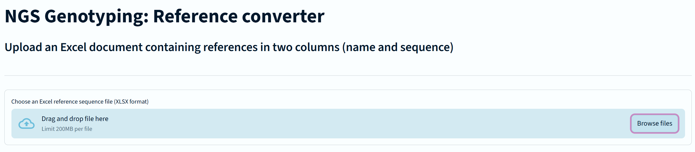
Once all formating issues are resolved, a FASTA format file of the same name but with the .fa extension will be saved to the Downloads folder.
The NGSG Retype application is a standalone software tool that helps users to select failed assays/samples/primer-pairs for rerunning.
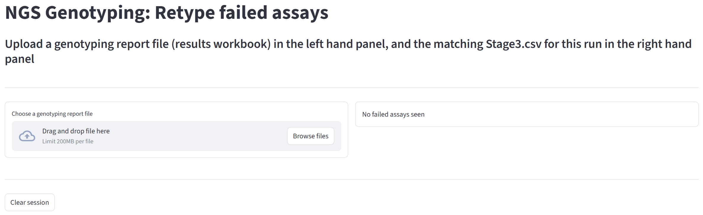
You are first required to use the widget on the left of the screen to upload the "results_workbook.csv" file that comes back from the Rodentity server. See the file formats page for more details about this.
After that has been successfully read, a new widget will appear on the right hand side of the screen asking for you to upload the Stage3.csv from the matching experiment (run) folder.
Once this has been done, Retype will create a custom 384-well manifest file that will inform the Echo liquid handler which DNA plates and wells it needs to rerun these failed samples-primer combinations.
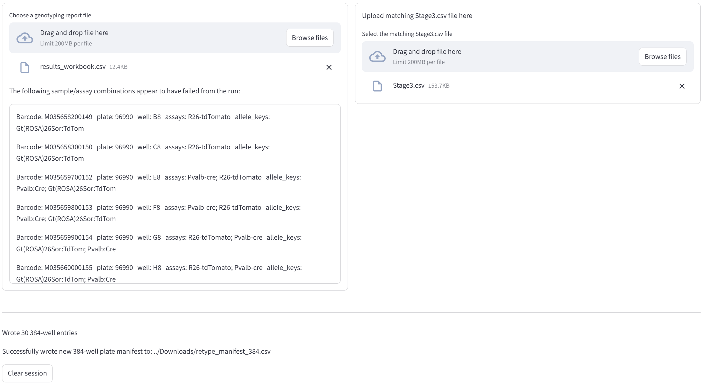
The manifest is automatically saved in the Downloads folder as "retype_manifest_384.csv"
Make sure you place this somewhere safe before you use Retype again, because it will overwrite this file without
You should upload it to a new experiment in NGSG Explorer using the Stage 1: Load, Custom 384 well manifest option.
Throughout the NGSG Explorer interface, there are information panels that can be used to display various types of information, and provide controls for selecting and removing items from the experiment.
These panels are controlled by drop-down selectors, and can be swapped out as needed by the users. There is a control provided to shrink or grow the height of panels for convenience. Columns within a panel can be adjusted to show or hide specific information.
This disables the information panel, allowing the full horizontal space to be used by another information panel. Simply changing the selection to another panel type will reactivate the panel.
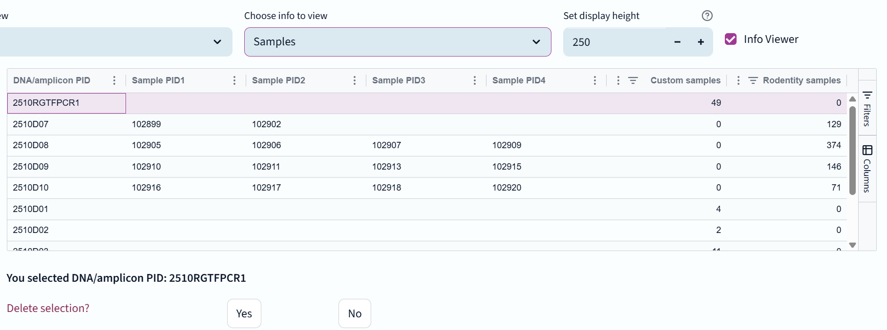
This panel displays all samples that have been loaded into the experiment, along with their relevant information such as sample name, sample ID, and any associated metadata. This panel allows users to select samples to remove them from the experiment.
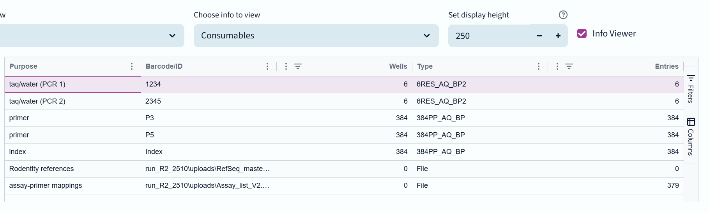
This panel displays all consumables that have been loaded into the experiment, such as primers, sequencing indexes, and information files, required for the genotyping process. Users can view details about each consumable, such as id, filename, relevant quantity.
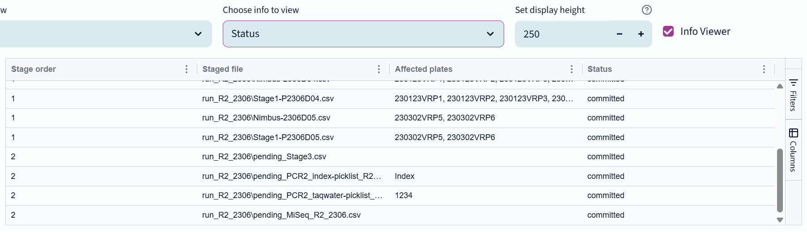
This panel provides an overview of the current status of the experiment, notably which pipeline sections have been run. It allows users to quickly assess the progress of the experiment so that they can carry on from the last completed stage.
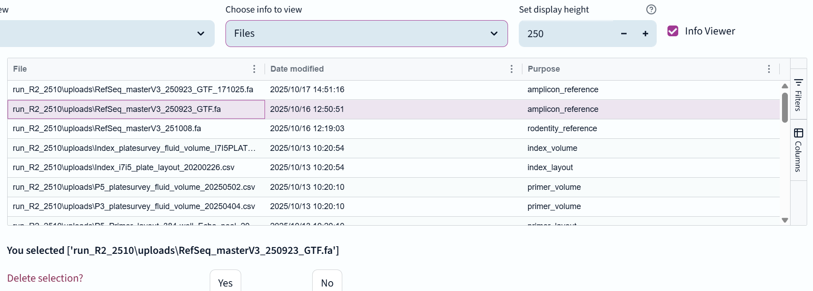
This panel displays all files that have been uploaded or generated during the experiment, such as raw data files, intermediate results, and final reports. Users can view details about each file, such as name, type, and size, and can select files to remove them from the experiment if they are no longer needed.
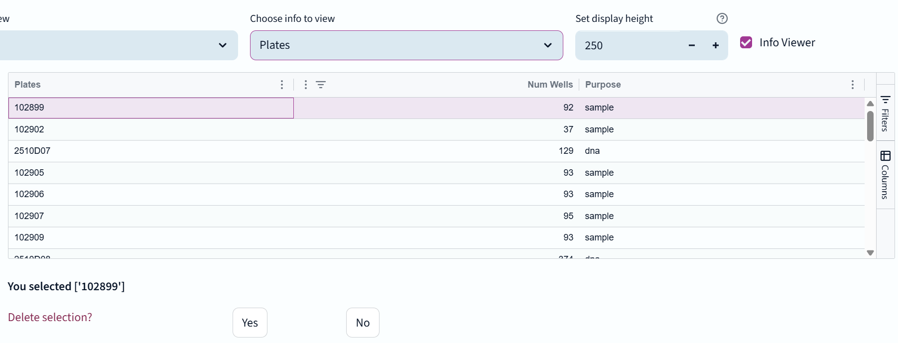
This panel displays all plates that have been loaded into the experiment, along with their relevant information such as plate name, plate type, and the samples or reagents contained within each plate. Users can select plates to remove them from the experiment if they are no longer needed.
This panel provides a visual representation of the plates used in the experiment. You can select any loaded plate to view its layout and contents.
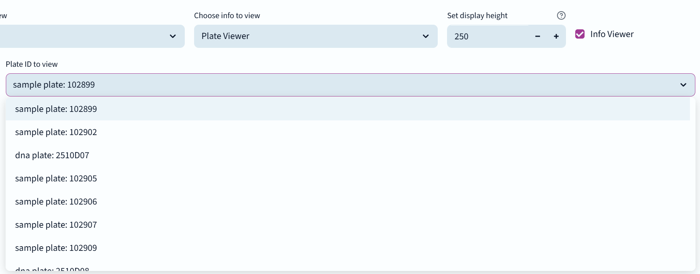
It will then display the plate layout.
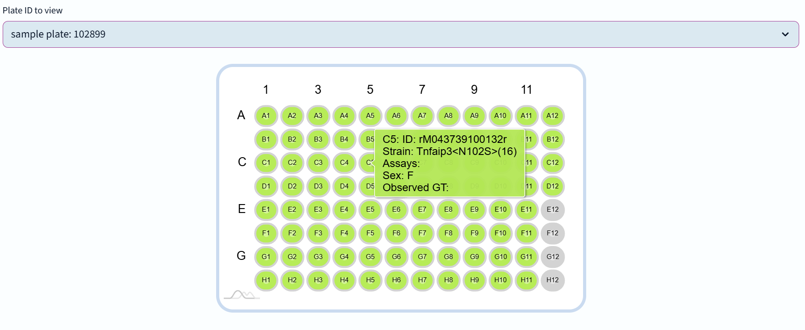
Users can mouse-over each well to see the layout of samples and reagents within each plate. It can be used to verify that samples and reagents are correctly arranged and to identify any potential issues with plate setup.
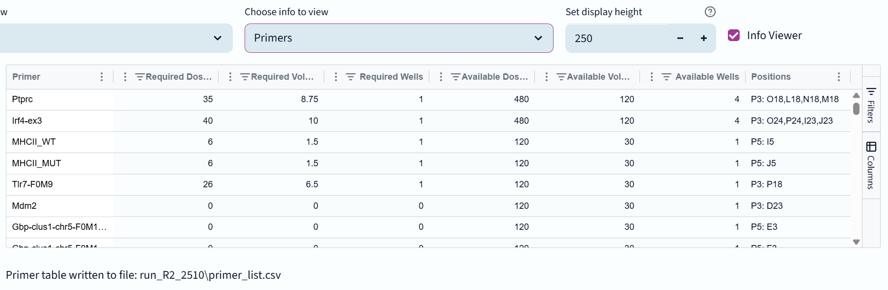
This panel displays all primers that have been loaded into the experiment, along with their relevant information such as primer name, sequence, and any associated metadata. The user cannot remove these primer wells once they have been loaded. The plate must be overwritten with one of the same name, or the old one removed and a new plate layout and volume file must be uploaded.
This panel displays all indexes that have been loaded into the experiment, along with their relevant information such as index name, sequence, and any associated metadata. The user cannot remove these index wells once they have been loaded. The plate must be overwritten with one of the same name, or the old one removed and a new plate layout and volume file must be uploaded.
This panel displays the activity log for the experiment, providing a record of all actions taken within the experiment, along with any warnings or errors that may have occurred. Users can use this panel to track the progress of the experiment and identify any issues that may need to be addressed.
At the bottom of every page is another information panel that always defaults to displaying the activity log.
This is a crucial tool for tracking all actions taken within the experiment. It is possible to change the view from the log panel to another information panel type, and you can have a second panel visible too. By default only the log is shown here to provide sufficient horizontal screen space.
The columns in the log display are (from left to right): Time, Level, Message, Function name, Func line.
Message levels are used to indicate the severity of an issue.
To aid users in spotting important issues, warnings are displayed in yellow, errors are displayed in red, and critical messages are in purple.
You cannot remove or clear log entries.
This page provides detailed information about the input and output file formats used in the NGS Genotyping Pipeline.
Users will need to upload various files at different stages of the pipeline, and also download files generated by the pipeline to USB for use with the Hamilton Nimbus robot and Illumina Miseq sequencer.
These files often have specific structures and name requirements that must be followed for the pipeline to process them correctly, or at least easy for users to recognise. Take the time to clearly name files for their intended purpose.
Some critical terms are used in the file names (and are noted in the specific entries below). If a user accidentally tries to upload a file for a different purpose e.g. primer layout file being uploaded as a primer volume file, the pipeline will reject it with a warning, and suggest the correct file type.
Always separate filename components with underscores. Never use spaces in filenames, use a dash '-' instead if necessary.
If a file of the same name is uploaded, the pipeline will ask the user whether they want to overwrite the existing file.
The term "manifest" is used in this pipeline to refer to input files that may contain records for more than one plate of samples
The pipeline generates various internal files during its operation, which are used for tracking and managing the genotyping process.
These files are JSON format and are downloaded from the Rodentity database (DB), describing the 96-well plates used for mouse ear punch samples. They are a complex file format that is provided directly by Rodentity and should not be edited by users. They contain information about the plate layout, sample IDs, and other metadata.
These files are uploaded in the Load Samples tab, in the first stage of the pipeline.
Here is an example of the structure of these files, which must be parsed by the pipeline code on loading. Actual names have been replaced with descriptive placeholders.
{
"wells": [
{
"plate": NNNNNN INT,
"wellLocation": "A1",
"mouse": {
"mouseKey": INT,
"mouselineName": "Text",
"barcode": "M and long number as a string",
"mouseNumber": INT,
"sex": "M",
"generation": "N1",
"dateOfBirth": "2024-12-02T00:00:00.000Z",
"mouseState": "word",
"alleles": [
{
"alleleKey": INT,
"name": "Long text",
"symbol": "Short text",
"options": [
Standard genotype options as strings, e.g. "m/+","m/m"
],
"assays": [
{
"assay_key": INT,
"name": "text",
"method": "string type of assay e.g. NGS"
},
]
},
These are comma-separated CSV files that users can create themselves to load custom sample plates that are not defined by Rodentity.
They have the same format as the Custom Sample 384-well format, only accept 96-well plates.
They are uploaded in the Load Samples tab, between the Rodentity and Custom Sample 384-well plate manifest sections, in the first stage of the pipeline.
Required columns: [plateBarcode, well, sampleBarcode, assay*, clientName] *Duplicates allowed Optional columns: [sampleNo, sampleName, alleleSymbol] and anything else
Example headers:
sampleNum plateBarcode well sampleBarcode assay assay clientName sampleName alleleSymbolThese are comma-separated CSV files generated by NGSG Retype, describing a set of 384-well plates of DNA samples that are to be resequenced, though they could also be defined manually by users.
They have the same basic format as the Custom Sample 96-well format, but only accept 384-well plates.
Required columns: [plateBarcode, well, sampleBarcode, assay*, clientName] *Duplicates allowed Optional columns: [sampleNo, sampleName, alleleSymbol] and anything else
Example headers:
sampleNum plateBarcode well sampleBarcode assay assay clientName sampleName alleleSymbolThis is a CSV file format that describes the amplicons loaded in the 384-well amplicon plates.
The amplicon columns refer to assays defined in the Amplicon reference list file. You can upload these in the Load Amplicons tab of the Load stage.
There is no primer amplification stage needed for amplicon samples - they skip straight to indexing and sequencing.
Example file:
sampleNo,plateBarcode,well,sampleBarcode,amplicon,amplicon,amplicon,amplicon,sample name
1,2510RGTFPCR1,A1,C250716LM01,Brachy-KO,,,,256-1
These are comma-separated CSV files generated by the pipeline and downloaded by the user to USB.
Nimbus files are named "Nimbus-plateID.csv", where plateID is the actual 384-well plate identifier that the Nimbus will aggregate samples into.
They inform the Hamilton Nimbus robot about the samples in each plate. The robot decides which position in the output plate to place each sample. The robot will then write an Echo_384_COC file which describes the transfer movements.
"Sample no","Plate barcode","Well","Sample barcode"
"1","102899","A1","M043782100257"
This is a CSV file format that indirectly describes the DNA samples loaded in the 384-well DNA plates. In order to generate a record of the 384-well Echo plate, the movements conducted by the Hamilton Nimbus robot are recorded in the Echo_384_COC file (CSV file format) that describes the source and destination of each transfer, while the sample and assay information is taken from the Rodentity or custom manifest records describing the 96-well sample plates. Descriptions of these are generated by the Hamilton Nimbus robot when it combines input from 1-4 96-well sample plates.
These are also used as inputs for resequencing failed samples/assays (using the NGSG Retype workflow).
"RecordId","TRackBC","TLabwareId","TPositionId","SRackBC","SLabwareId","SPositionId","SPositionBC"
1,"2510D07","Echo_384_COC_0001","A1","102899","ABg_96_PCR_NoSkirt_0001","A1","M043782100257M"
These are comma-separated CSV file formats that describe the layout of primers in the 384-well primer plates.
The first part of the file name is considered as the plate barcode or identifier. The words "primer" and "layout" should be included in the file name. All parts of the file name must be separated by underscores. e.g P3_Primer_layout_384-well_Echo_pool_20250718.csv
plate position on Echo 384 PP,primer names pooled
A01,Casp1-10del
The header column names don't matter and are ignored by the parsing code.
These are comma-separated CSV file formats that describe the volumes of primers available to be dispensed into the Echo PCR plates.
The first part of the file name is the plate identifier or barcode, and must match the plate identifier in the primer layout file.
All parts of the file name must be separated by underscores. e.g P3_Primer_volumes_384-well_Echo_pool_20250718.csv
Date,3/12/2020,,,,,,,,,,,,,,,,,,,,,,,
Time,6:38:17,,,,,,,,,,,,,,,,,,,,,,,
,,,,,,,,,,,,,,,,,,,,,,,,
,1,2,3,4,5,6,7,8,9,10,11,12,13,14,15,16,17,18,19,20,21,22,23,24
A,60,60,60,60,60,60,60,60,60,60,60,60,60,60,60,60,60,60,60,60,60,60,60,60
B,60,60,60,60,60,60,60,60,60,60,60,60,60,60,60,60,60,60,60,60,60,60,60,60
C,60,60,60,60,60,60,60,60,60,60,60,60,60,60,60,60,60,60,60,60,60,60,60,60
D,60,60,60,60,60,60,60,60,60,60,60,60,60,60,60,60,60,60,60,60,60,60,60,60
E,60,60,60,60,60,60,60,60,60,60,60,60,60,60,60,60,60,60,60,60,60,60,60,60
F,60,60,60,60,60,60,60,60,60,60,60,60,60,60,60,60,60,60,60,60,60,60,60,60
G,60,60,60,60,60,60,60,60,60,60,60,60,60,60,60,60,60,60,60,60,60,60,60,60
H,60,60,60,60,60,60,60,60,60,60,60,60,60,60,60,60,60,60,60,60,60,60,60,60
I,60,60,60,60,60,60,60,60,60,60,60,60,60,60,60,60,60,60,60,60,60,60,60,60
J,60,60,60,60,60,60,60,60,60,60,60,60,60,60,60,60,60,60,60,60,60,60,60,60
K,60,60,60,60,60,60,60,60,60,60,60,60,60,60,60,60,60,60,60,60,60,60,60,60
L,60,60,60,60,60,60,60,60,60,60,60,60,60,60,60,60,60,60,60,60,60,60,60,60
M,60,60,60,60,60,60,60,60,60,60,60,60,60,60,60,60,60,60,60,60,60,60,60,60
N,60,60,60,60,60,60,60,60,60,60,60,60,60,60,60,60,60,60,60,60,60,60,60,60
O,60,60,60,60,60,60,60,60,60,60,60,60,60,60,60,60,60,60,60,60,60,60,60,60
P,60,60,60,60,60,60,60,60,60,60,60,60,60,60,60,60,60,60,60,60,60,60,60,60
Alternatively, the volume layout can be provided as a comma-separated CSV file with two columns: "well" and "volume".
This is a comma-separated CSV file that describes the primers available for use in the genotyping process. Having this as a list can be helpful for the lab team in setting up primer plates.
It is named "Primer-svy.csv". Here is the format:
Source Plate Name,Source Plate Barcode,Source Plate Type,plate position on Echo 384 PP,primer names pooled,volume
Source[1],P3,384PP_AQ_BP,A1,Casp1-10del,60.0
This is a comma-separated CSV file that describes the primers available for use in the genotyping process, but in a much more detailed format than the primer survey file. It includes information about the required and available volumes and doses of each primer, as well as the positions of the primers in the Primer plates that have been uploaded to the pipeline so far.
It is named "Primer-list.csv". Here is the format:
Primer,Required Doses,Required Volume (μL),Required Wells,Available Doses,Available Volume (μL),Available Wells,Positions,::auto_unique_id::
Ptprc,35,8.75,1,480.0,120.0,4,"P3: O18,L18,N18,M18",0
These are comma-separated CSV file formats that describe the layout of index barcodes in the 384-well index plates.
Source well,Name for IDT ordering,index ,Name,Oligo * -phosphothioate modif. against exonuclease,
A1,96_SET_1_i7F_1,AACCTTGG,index_8nt_7,CAAGCAGAAGACGGCATACGAGATccaaggttGTCTCGTGGGCTCG*G,
These are CSV file formats that describe the volumes of index barcodes available to be dispensed into the Echo PCR plates. They are separate from the layouts as they can be created from measurements taken by the Echo directly.
In practice, a standard pair of layout and volume files is used for all assays, without measurement.
Date,3/12/2020,,,,,,,,,,,,,,,,,,,,,,,
Time,8:50:31,,,,,,,,,,,,,,,,,,,,,,,
,,,,,,,,,,,,,,,,,,,,,,,,
,1,2,3,4,5,6,7,8,9,10,11,12,13,14,15,16,17,18,19,20,21,22,23,24
A,56,56,56,56,56,56,56,56,56,56,56,56,56,56,56,56,56,56,56,0,0,0,0,0
B,56,56,56,56,56,56,56,56,56,56,56,56,56,56,56,56,56,56,56,0,0,0,0,0
C,56,56,56,56,56,56,56,56,56,56,56,56,56,56,56,56,56,56,56,0,0,0,0,0
D,56,56,56,56,56,56,56,56,56,56,56,56,56,56,56,56,56,56,56,0,0,0,0,0
E,56,0,56,0,56,0,56,56,56,56,0,56,0,56,0,56,56,56,56,0,0,0,0,0
F,56,0,56,0,56,0,56,56,56,56,0,56,0,56,0,56,56,56,56,0,0,0,0,0
G,56,0,56,0,56,0,56,56,56,56,0,56,0,56,0,56,56,56,56,0,0,0,0,0
H,56,0,56,0,56,0,56,56,56,56,0,56,0,56,0,56,56,56,56,0,0,0,0,0
I,0,0,0,0,0,0,0,0,0,0,0,0,0,0,0,0,0,0,0,0,0,0,0,0
J,0,0,0,0,0,0,0,0,0,0,0,0,0,0,0,0,0,0,0,0,0,0,0,0
K,0,0,0,0,0,0,0,0,0,0,0,0,0,0,0,0,0,0,0,0,0,0,0,0
L,0,0,0,0,0,0,0,0,0,0,0,0,0,0,0,0,0,0,0,0,0,0,0,0
M,0,0,0,0,0,0,0,0,0,0,0,0,0,0,0,0,0,0,0,0,0,0,0,0
N,0,0,0,0,0,0,0,0,0,0,0,0,0,0,0,0,0,0,0,0,0,0,0,0
O,0,0,0,0,0,0,0,0,0,0,0,0,0,0,0,0,0,0,0,0,0,0,0,0
P,0,0,0,0,0,0,0,0,0,0,0,0,0,0,0,0,0,0,0,0,0,0,0,0
Alternatively, the volume layout can be provided as a comma-separated CSV file with two columns: "well" and "volume".
This is a comma-separated CSV file that describes the index barcodes available for use in the genotyping process. It is generated automatically by the pipeline to help with lab preparation for the indexing process.
It is named "Index-svy.csv". Here is the format:
Source Plate Name,Source Plate Barcode,Source Plate Type,Source well,Name for IDT ordering,index,Name,Oligo * -phosphothioate modif. against exonuclease,volume
Source[1],Index,384PP_AQ_BP,A1,96_SET_1_i7F_1,AACCTTGG,index_8nt_7,CAAGCAGAAGACGGCATACGAGATccaaggttGTCTCGTGGGCTCG*G,56.0
This is a comma-separated CSV file that describes the samples and index barcodes loaded in the Miseq sequencer. It is generated by the pipeline and downloaded by the user to USB, and then uploaded back to the pipeline after sequencing to inform the pipeline about the sample layout in the sequencer.
It is named "Miseq_runID.csv", where "runID" is the unique identifier/experiment name within NGSG Explorer.
Here is an example file with a single sample entry:
[Header],,,,,,,,,,
IEMFileVersion,4,,,,,,,,,
Investigator Name,,,,,,,,,,
Experiment Name,NGSG:R2_2510,,,,,,,,,
Date,,,,,,,,,,
Workflow,GenerateFASTQ,,,,,,,,,
Application,FASTQ Only,,,,,,,,,
Assay,Nextera XT,,,,,,,,,
Description,Mouse genotyping,,,,,,,,,
Chemistry,Amplicon,,,,,,,,,
,,,,,,,,,,
[Reads],,,,,,,,,,
151,,,,,,,,,,
151,,,,,,,,,,
,,,,,,,,,,
[Settings],,,,,,,,,,
ReverseComplement,0,,,,,,,,,
Adapter,,,,,,,,,,
,,,,,,,,,,
[Data],,,,,,,,,,
Sample_ID,Sample_Name,Sample_Plate,Sample_Well,I7_Index_ID,index,I5_Index_ID,index2,Sample_Project,Description
2510R2PCR1_A01,M043773700032,,,96_SET_1_i7F_1,AACCTTGG,96_SET_1_i5R_1,AACCGAAC,NGSgeno
These are standard FASTQ files generated by the Illumina Miseq platform, containing the sequenced DNA reads from the samples. They are used as input for the sequence matching stage of the pipeline.
These may have file extensions of .fastq or .fq, and may also be compressed with gzip (.gz), e.g. .fastq.gz or .fq.gz
These are standard FASTA files containing reference DNA sequences for the amplicons being analyzed. They are used as an input for the sequence matching stage of the pipeline to compare against the sequenced reads and determine genotypes.
These files may have file extensions of .fasta or .fa, and may also be compressed with gzip (.gz), e.g. .fasta.gz or .fa.gz
As of NGS Genotyping Pipeline version 2, multiple reference genome files can be uploaded.. Separate reference files are typically used for Rodentity and Amplicon plate matching.
The NGS Genotying Pipeline incorporates an extension to the FASTA format by allowing '(','[', and ']',')' characters in the sequence definitions. These denote repeat regions that may be present in zero or more copies and are not required in matched sequences. For example:
>ABC1_target-with-repeat
CGAGACATTCCGAGTGTCGGCGCAGGCGAGAGTTTTGAGAGCGCGAGCTTTGCAGGAGACAGGCGAACGCAGCTTACGTAGCAGCT(C)CGAAGTTTCGAGCAGAGC
These are comma-separated CSV files that describe the relationship between mouse NGS assays, the family of assays that must be performed to correctly identity the family of alleles, and the primer names that must be loaded that specific assay.
Here is an example with a single entry. Any number of primer columns can be included. There must be at least three columns populated in each row.
assay assayFamily primer primer primer primer primer primer primer
Ptprc Ptprc Ptprc
This is a FASTA file that enumerates all unexpected sequences for a given sample number.
If the sequence doesn't match any expected target, it will give the full sequence (and the count in the header). If it matches a known but unexpected sequence, which may be a contaminant, then the name is given instead of the sequence.
>Sample:2;count:76
TCCCATTTTATCACTGACTTCCTGCCTTGCTCTCTCTCCCTCGACACGCAGAGAGCCAACCCACTGATTATTACGTTCTGGGAGAAGAGGAGGAGGAGGAAGAGGAAGAGGTGTGTGGGGATGAGGATGAGGCTGGCC
>Sample:2;count:76
GCTCCCATTTTATCACTGACTTCCTGCCTTGCTCTCTCTCCCTCGACACGCAGAGAGCCAACCCACTGATTATTACGTTCTGGGAGAAGAGGAGGGGGAGGAAGAGGAAGAGGTGTGTGGGGATGAGGATGAGGCTGGCC
>Sample:2;count:76
Tap1Tap2-KO_MUT-KO:KO
This is a comma-separated CSV file that is returned by a Rodentity Genotyping Web Service.
It can be fed back into the NGSG Retype web tool, along with the Stage3.csv file from the matching experiment run folder, to automatically pick out failed sample-primer combinations for re-typing.
The format is not defined within this code base, but is instead the property of the Rodentity support team (APF).
barcode,code_assays,plate,wellLocation,sex,alleleSymbol,alleleKey,assayKey,passFail,seqName1,seqName2,seqName3,seqName4,seqName5,seqName6,seqName7,efficiency,alleleRatio,alleleRatioAdjusted,genotype,args,reason
M035658200149,M035658200149;R26-tdTomato,96990,B8,F,Gt(ROSA)26Sor:TdTom,386,2158,pass,,,,,,,,0,0,0,?,Y,
These are files generated by the pipeline during its operation, which are used for tracking and managing the genotyping process. Some of these files are required for the pipeline to function, while others are generated for debugging or record-keeping purposes.
Users are unlikely to need to interact with these files directly, but their details are included here for pipeline maintainers.
These are comma-separated CSV files generated by the pipeline to track the samples and assays loaded in stage 1 of the pipeline and are generated in 1-1 correspondance with Nimbus-plateID.csv files. The used to be the staging files for the actual pipeline, were replaced with an experiment JSON file to allow for more flexible experiment design. They are no longer strictly required by the pipeline and may be removed from a future release, though they do form the basis for later Stage2.csv and Stage3.csv files.
Example file, note the "p" guarded plate barcodes and the "r" sample barcodes:
"samplePlate","sampleWell","sampleBarcode","strain","sex","alleleSymbol","alleleKey","assayKey","assays","assayFamilies","clientName","sampleName"
"p102899p","C2","rM043732400027r","OT-I:CD45.1","M","""Ptprc:ab""","1559","2020","Ptprc","Ptprc","",""
This is a comma-separated CSV file generated by the pipeline to track the samples after the primer-allocation stage (PCR1) of the pipeline. There is only a single Stage2.csv file and it extends the Stage1-plateID.csv file with the following columns:
The Stage2.csv file is currently required by the pipeline for the indexing stage. This requirement should be removed in future versions, resulting this file being deprecated.
Example file (just the last seven columns):
"dnaPlate","dnaWell","primer","primerPlate","primerWell","pcrPlate","pcrWell"
"p2510D07p","A2","Ubtf-ex8-F0M2","pP5p","C7","p2510R2PCR1p","A1"
This is a comma-separated CSV file generated by the pipeline to track the samples after index allocation (PCR2). There is only a single Stage3.csv file and it extends the Stage2.csv file with the following columns:
Stage3.csv is currently required by the pipeline and forms the basis for the final results.csv and amplicon_results.csv files.
Example file: just the last seven columns
"i7bc","i7name","i7well","i5bc","i5name","i5well","index_plate"
"AACCTTGG","96_SET_1_i7F_1","A1","AACCGAAC","96_SET_1_i5R_1","A7","Index"
This is a comma-separated CSV file generated by the pipeline to report the genotyping results for all sequenced wells of Echo PCR plates used in an experiment run.
Note: there is no separation of Rodentity and Custom results as of v2.04.000
The results.csv file extends Stage3.CSV with the following columns:
Example file, just the last eight columns:
"readCount","cleanCount","mergeCount","seqCount","seqName","efficiency","otherCount","otherName"
"19911","19568","19241","6560;4106","Ubtf-ex8-F0M2_MUT-del20:;Ubtf-ex8-F0M2_WT","0.554","8575","other (2397)"
These are text files containing information about wells that have been reported (and written to PDF) in the experiment.
They are available for amplicons, Rodentity, and custom samples, and take the form amplicon_reported.txt, etc.
They ensure that we don't double-up entries that have been multiple sequence aligned and then written to a PDF report.
Here is an example entry:
2510RGTFPCR1 E3 C250929CM73901 Stag2-KO
This is identical to the Results CSV file, but only includes amplicon samples. Information regarding DNA plates or primer plate details are likely to be missing.
This is a log file generated by the Allele matching process, when enabled by the user.
Each entry is led by the log level and a colon. Usually the process ID follows, and then whatever the programmer deems useful.
Here is an actual example line from this file:
Info: 15916 Working on sampleNo='1' pcrPlate='2510R2PCR1' pcrWell='A01'
A subset of all the available reference sequence files that have been loaded, to be used for matching the Rodentity and Custom samples.
It follows the exact same format as the reference sequence files.
A subset of all the available reference sequence files that have been loaded, to be used for matching the amplicon samples.
It follows the exact same format as the reference sequence files.
This is the default logging of the allele matching process. It otherwise resembles the debug.log file.
These are tab-separated value files containing the parameters used for filtering the view of samples, primarily for subsequent multiple sequence alignment (disabled as of v2.04.000).
They are generated automatically during the reporting stage as the user adjusts filtering criteria.
Separate files exist for each sample group:
All have the same basic format of plateID, wellID, sampleID, and proportion count cutoff:
102899 B4 M043738200004 0.15
This is a JSON file containing the experimental design and metadata for the entire experiment.
While the empty experiment file is a minimal representation of the experiment structure, it rapidly gets very complex with nested dictionary structures as data is loaded. Understanding a fully populated experiment file requires familiarity with the internal workings of the pipeline, and is not necessary for users of the pipeline.
{
"py/object": "experiment.Experiment",
"py/state": {
"name": "test1",
"description": "",
"locked": false,
"unassigned_plates": {
"custom": {},
"json://1": "",
"json://2": "",
"json://3": "",
"json://4": ""
},
"dest_sample_plates": {},
"plate_location_sample": {},
"deleted_plates": {},
"stage": "new",
"denied_assays": [],
"denied_primers": [],
"assay_synonyms": {},
"primer_assayfam": {},
"assayfam_primers": {},
"assay_assayfam": {},
"assayfam_assays": {},
"reference_sequences": {},
"uploaded_files": {
"_upload_queue": {},
"_upload_pending": {}
},
"reproducible_steps": [],
"pending_steps": {
"py/set": []
},
"pending_uploads": {
"py/set": []
},
"log_entries": [],
"log_time": {
"py/object": "datetime.datetime",
"__reduce__": [
{
"py/type": "datetime.datetime"
},
[
"B+oEDg0FAwSFSw=="
]
]
},
"transfer_volumes": {
"DNA_VOL": 200,
"PRIMER_VOL": 250,
"PRIMER_TAQ_VOL": 1000,
"PRIMER_WATER_VOL": 550,
"INDEX_VOL": 175,
"INDEX_TAQ_VOL": 2000,
"INDEX_WATER_VOL": 650
}
}
}
Sequence matching is a critical step in the NGS genotyping pipeline that involves comparing the sequencing reads against a reference database to identify the presence or absence of specific genetic variants.
In the NGS Genotyping pipeline, sequence matching is done with a process of several steps. These are launched in parallel, across several physical computer processors, to save time. Steps that involve long wait times are also performed asynchronously where possible. This means that code execution "threads" can continue to work on other tasks while waiting for the completion of a long-running task, such as a sequence quality trimming or read-end merging. This allows for more efficient use of computational resources and can significantly reduce the overall time required for the sequence matching process.
Repeating what is written in the Alleles Stage section... When the "Run allele calling" button is pressed, the following steps are performed:
Steps 1 and 2 are performed using BBtools, by Brian Bushnell. The tools bbduk and bbmerge are used for quality trimming and read merging, respectively.
The bbduk command parameters are: -Xmx1g t=2 qtrim=rl trimq=20 minlen=50 k=23 ktrim=r mink=11 hdist=1 overwrite=true ref=bbmap\resources\adapters.fa
These specify:
bbmerge is only run with one non-standard parameter: -pfilter=1, which forces perfect overlap requirements. This ensures that no artifical sequences are generated from the merging process.
Step 3 is matching. In the main genotyping pipeline, this is always done using exact matching. Inexact matching is optional, and is always used in the amplicon pipeline. These are described in more detail below.
Step 4 is a time-saving filter. Reads that do not meet the minimum criteria are skipped to save computational resources. Where to set the minimum read coverage, or the minimum proportion of reads will be determined by the PCR reaction likelihood and must be determined by trial and error. In the future, it would be ideal to set these parameters based on past performance of individual primers, but at present this kind of capability isn't available.
Exact matching means that if seq A matches somewhere within the length of seq B (or vice versa) then this is a match. No differences are allowed within the overlapping region. This may seem strict, but around 10%-40% of merged reads will match their reference sequence this way. Exact matching is very fast, and is always performed as a preliminary step before inexact matching.
By default a maximum length difference of 10% is allowed between the merged read and the reference sequence. That is to say, the shorter sequence must be at least 90% the length of the longer sequence.
As an optional feature for the genotyping pipeline, inexact matching can be used to allow for some differences between the merged sequences and the reference sequences.
Inexact matching is always done in two round, firstly against any expected sequences, and then against all remaining reference sequences.
This is partly done to improve performance, but also to avoid false positive detection against similar but unrelated sequences.
Inexact matching uses the Bio.Align module from the Biopython library v1.85 to perform global (end-to-end) sequence alignment using the following parameters:
These parameters allow for a more flexible matching approach, accommodating sequencing errors and polymorphisms, which are then annotated after the best match is found.
In order to be declared a match, the alignment score must be 90% (by default) of the maximum possible score. This cutoff can be set in the interface before the matching is started.
Local alignment should not be used for amplicons in general, as it is likely to produce false matches against unrelated sequences.
The settings above are based on defaults values used in the BWA aligner by Heng Li, and are otherwise chosen empirically to fit with Illumina sequencing data.
Inexact matching is always turned on with the amplicon pipeline, as we always want to find and report variants.
In any case, exact matching is always performed as a preliminary step as it's much faster, followed by inexact matching if necessary.